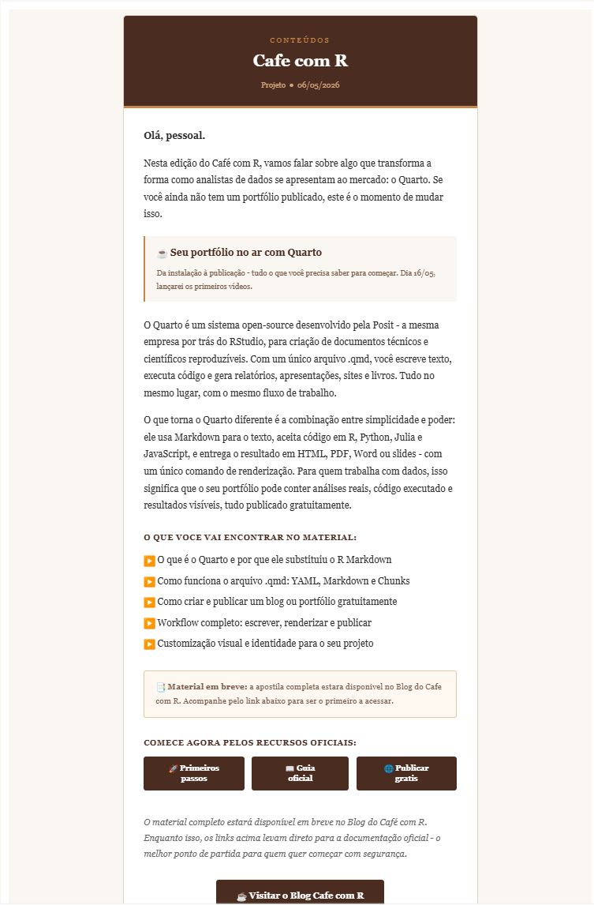

Aula 20. Envio de e-mails com o pacote blastula
Você sabia que isso é possível no R?
Democratização
Esta aula foi construída para que você possa automatizar o envio de relatórios e e-mails diretamente do R, integrando análise e comunicação em um único fluxo.

Acompanhe o Café com R

Projeto no Youtube - Lançamento dia 16/05

Inscreva-se já no canal Link.
Objetivos da aula
- Compreender o que é o pacote blastula e por que ele é relevante
- Instalar e configurar o ambiente de envio
- Compor e-mails com Markdown, imagens e gráficos
- Configurar credenciais SMTP com segurança
- Enviar e-mails via SMTP e via RStudio Connect
- Aplicar boas práticas e identificar erros comuns
Eu uso bastante pessoal, esse é um exemplo

E-mail enviado na semana passada. Do café com R.
O pacote blastula
O que é o blastula?
blastula é um pacote R desenvolvido pela Posit que permite compor e enviar e-mails HTML responsivos diretamente do R.
- Criado por Richard Iannone e Joe Cheng
- Disponível no CRAN desde 2019
- Versão atual: 0.3.2
- Repositório: github.com/rstudio/blastula
- Documentação: pkgs.rstudio.com/blastula
blastula

Por que usar o blastula?
O envio de e-mails é um passo natural no final de um pipeline de análise. Com o blastula você elimina a necessidade de copiar resultados manualmente para um cliente de e-mail.
- O e-mail é composto com Markdown e HTML dentro do R
- Gráficos
ggplot2são inseridos diretamente no corpo da mensagem - O HTML gerado é compatível com os principais clientes de e-mail
- O envio pode ser automatizado com agendamento
Três formas de envio
| Método | Quando usar |
|---|---|
| SMTP | Envio via servidor de e-mail próprio ou corporativo |
| RStudio Connect | Relatórios agendados com R Markdown |
| Mailgun API | Envio em escala via serviço externo |
Estrutura do e-mail no blastula
Um e-mail composto com blastula tem três áreas de conteúdo:
- header: cabeçalho, título ou identificação visual
- body: corpo principal com texto, imagens e gráficos
- footer: rodapé com informações de assinatura ou data
Cada área aceita Markdown, fragmentos HTML e objetos R.
Etapas do fluxo no blastula
Instalar e carregar pacotes
Configurar credencial SMTP
Criar template com
compose_email()Personalizar texto com
glue()Visualizar o e-mail no Viewer
Enviar com
smtp_send()Testar com seu próprio e-mail
Depois automatizar por lista ou agendamento
Instalação e Configuração
Instalação
Pacotes complementares
# Pacotes utilizados nesta aula
library(blastula)
library(glue) # interpolação de strings
library(ggplot2) # geração de gráficos para inserção no e-mail
library(dplyr) # manipulação de dadosglue é usado para interpolar variáveis R dentro do texto do e-mail. O blastula depende dele internamente para construir o conteúdo dinâmico.
Compondo o E-mail
Função principal: compose_email()
A função compose_email() é o ponto central do blastula. Ela recebe o conteúdo das três áreas e retorna um objeto de e-mail que pode ser visualizado e enviado.
O argumento md() indica que o conteúdo será interpretado como Markdown.
Primeiro e-mail: código
library(blastula)
library(glue)
# Registro da data e hora atual no formato legível
data_envio <- add_readable_time()
# Composição do e-mail
email <- compose_email(
body = md(glue(
"Olá,
Este é um e-mail enviado diretamente do R com o pacote **blastula**.
Data de envio: {data_envio}.")),
footer = md("Jennifer Lopes | Café com R"))Visualizando antes de enviar
Após compor o e-mail, chame o objeto no console. O RStudio abre uma pré-visualização no painel Viewer.
Sempre visualize antes de enviar. Erros de formatação aparecem nessa etapa sem custo nenhum.
Inserindo imagens no corpo
# Caminho para a imagem local
caminho_imagem <- "graficos/resultado_mensal.png"
# Converter a imagem para string HTML incorporada
imagem_html <- add_image(file = caminho_imagem)
# Usar no corpo do e-mail
email <- compose_email(
body = md(glue(
"Segue o resultado da análise mensal:
{imagem_html}
"
)))add_image() converte a imagem para base64 e a incorpora diretamente no HTML do e-mail, dispensando hospedagem externa.
Inserindo gráficos ggplot2
Inserindo gráficos ggplot2 no e-mail
# Converter o gráfico para string HTML incorporada
grafico_html <- add_ggplot(
plot_object = grafico,
width = 6,
height = 4)
# Compor o e-mail com o gráfico
email <- compose_email(
body = md(glue(
"Segue a análise desta semana:
{grafico_html}
"
)),
footer = md(glue("Enviado em {add_readable_time()}.")))add_readable_time()
add_readable_time() retorna a data e hora atual em formato legível para humanos. Útil para registrar quando o e-mail foi gerado.
O formato pode ser ajustado com os argumentos use_tz e locale para adaptação ao contexto brasileiro.
Blocos de conteúdo: block_text() e block_spacer()
O blastula oferece funções para construir o corpo do e-mail em blocos estruturados:
email <- compose_email(
body = blocks(
block_text("Relatório semanal de análise de dados."),
block_spacer(),
block_text(
md("Os resultados completos estão disponíveis no [portfólio](https://jenniferlopes.quarto.pub/portifolio)."))))blocks() combina múltiplos blocos em sequência. block_spacer() insere espaçamento visual entre seções.
Configurando Credenciais SMTP
O que é SMTP?
SMTP (Simple Mail Transfer Protocol) é o protocolo padrão para envio de e-mails. Para enviar pelo blastula via SMTP, você precisa:
- Endereço do servidor SMTP
- Porta de conexão (geralmente 465 ou 587)
- E-mail e senha ou token de autenticação
O blastula oferece duas formas de armazenar essas credenciais com segurança.
Método 1: arquivo de credenciais
# Criar arquivo de credenciais (executar uma vez)
create_smtp_creds_file(
file = "credenciais_email",
user = "jennifer@exemplo.com",
provider = "gmail")O arquivo é criado na pasta do projeto. Nunca versione esse arquivo. Adicione ao .gitignore:
credenciais_emailMétodo 2: chave no sistema operacional
# Armazenar credenciais no gerenciador de chaves do SO
create_smtp_creds_key(
id = "gmail_jeni",
user = "jennifer@exemplo.com",
provider = "gmail")Este método armazena as credenciais no sistema operacional (Keychain no macOS, Credential Manager no Windows), sem gravar nada em arquivo no projeto.
Provedores suportados
| Provedor | Argumento provider |
|---|---|
| Gmail | "gmail" |
| Outlook / Hotmail | "office365" |
| SendGrid | "sendgrid" |
| Personalizado | omitir e usar host e port |
Configuração manual para servidor personalizado
create_smtp_creds_key(
id = "servidor_corporativo",
user = "usuario@empresa.com.br",
host = "smtp.empresa.com.br",
port = 587,
use_ssl = TRUE)Use esta forma quando a empresa possui servidor SMTP próprio e o provedor não está na lista padrão.
Atenção: Gmail e autenticação em dois fatores
Important
O Gmail exige uma senha de aplicativo quando a autenticação em dois fatores está ativada. A senha da conta não funciona diretamente via SMTP.
Para gerar a senha de aplicativo: Conta Google > Segurança > Senhas de app.
Enviando o E-mail
smtp_send(): código
smtp_send(): com chave do sistema
Enviando para múltiplos destinatários
Automação com R Markdown e RStudio Connect
blastula + R Markdown
O blastula se integra com R Markdown para enviar relatórios renderizados automaticamente via RStudio Connect.
O fluxo tem dois arquivos:
- Relatório principal (.Rmd): executa a análise e define o e-mail a ser enviado
- Relatório de e-mail (.Rmd): define o conteúdo e o layout do e-mail
Relatório de e-mail (.Rmd): YAML
O output blastula::blastula_email instrui o R Markdown a gerar um objeto de e-mail em vez de um HTML convencional.
Relatório principal: código de envio
# No relatório principal (.Rmd), após a análise:
render_connect_email(
input = "email_relatorio.Rmd") |>
attach_connect_email(
subject = "Relatório semanal - automático")render_connect_email() renderiza o arquivo de e-mail. attach_connect_email() vincula o e-mail renderizado ao relatório principal para envio via RStudio Connect.
Automação com agendamento
No RStudio Connect, o relatório principal pode ser agendado para executar periodicamente:
- Toda segunda-feira às 8h
- No primeiro dia de cada mês
- Após a conclusão de outro processo
Cada execução agendada gera e envia o e-mail automaticamente, sem intervenção manual.
Boas Práticas e Erros Comuns
Boas práticas
- Nunca versione arquivos de credenciais. Adicione ao
.gitignorequalquer arquivo criado comcreate_smtp_creds_file() - Use variáveis de ambiente para armazenar senhas quando o projeto for colaborativo
- Visualize o e-mail antes de enviar chamando o objeto no console
- Teste com envio para você mesmo antes de enviar para a lista completa
- Documente o fluxo de envio no README do projeto
Boas práticas: .Renviron para credenciais
Erros comuns - Parte 1
| Erro | Causa | Solução |
|---|---|---|
Authentication failed |
Senha incorreta ou 2FA ativo | Usar senha de aplicativo no Gmail |
Connection refused |
Porta bloqueada pelo firewall | Verificar porta 465 ou 587 com TI |
SSL error |
Configuração de SSL incorreta | Ajustar use_ssl = TRUE ou FALSE |
Erros comuns - Parte 2
| Erro | Causa | Solução |
|---|---|---|
| Imagem não aparece | Caminho do arquivo incorreto | Usar here::here() para caminhos |
| E-mail na caixa de spam | Domínio sem SPF/DKIM configurado | Verificar configuração do domínio |
| Gráfico distorcido | Dimensões incorretas em add_ggplot() |
Ajustar width e height |
Conexão com o mercado
O blastula é amplamente utilizado em contextos onde relatórios precisam ser distribuídos de forma recorrente e automatizada:
- Monitoramento de KPIs: envio diário ou semanal de indicadores para gestores
- Alertas de anomalias: e-mail disparado quando um indicador ultrapassa um limite
- Relatórios de modelos: distribuição automática de resultados de modelos em produção
- Pipelines de dados: notificação de conclusão ou falha em etapas do pipeline
Resumo das funções principais
| Função | O que faz |
|---|---|
compose_email() |
Compõe o e-mail com body, header e footer |
add_image() |
Insere imagem local no corpo do e-mail |
add_ggplot() |
Insere gráfico ggplot2 no corpo do e-mail |
add_readable_time() |
Retorna data e hora formatada |
create_smtp_creds_file() |
Cria arquivo de credenciais SMTP |
create_smtp_creds_key() |
Armazena credenciais no sistema operacional |
smtp_send() |
Envia o e-mail via SMTP |
render_connect_email() |
Renderiza e-mail a partir de R Markdown |
attach_connect_email() |
Vincula e-mail ao relatório no RStudio Connect |
Referências
- Documentação oficial: pkgs.rstudio.com/blastula
- Repositório GitHub: github.com/rstudio/blastula
- Artigo SMTP: pkgs.rstudio.com/blastula/articles/sending_using_smtp.html
- Blog post Posit: blog.rstudio.com/2019/12/05/emails-from-r-blastula-0-3
- Exemplos com RStudio Connect: solutions.rstudio.com/r/blastula
Obrigada!

Continue praticando e explorando!
Esta apresentação é parte do projeto Café com R. É open source. Use, compartilhe e adapte.
Siga o Café com R
Fique por dentro das aulas, conteúdos e newsletter.
Que cada gole desperte uma nova ideia.
Que cada script abra uma nova conversa.
Que o Café com R se torne um ponto de encontro nosso.

Jennifer Lopes | Café com R